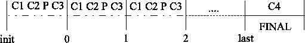
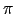
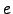

Gian Paolo Jesi (jesi@cs.unibo.it)
This tutorial is for PeerSim 1.0, in particular, its so-called cycle based engine. If the reader is not a PeerSim newbie, she may be interested in what major changes have been introduced since the last version. The changes are summarized in Appendix C. For a more detailed list, please check the PeerSim CHANGELOG file, included in the distribution.
This tutorial is a step by step guide to build from scratch a new PeerSim application. In this tutorial it is supposed that you have access to:
The aim of this tutorial is to be as practical and lightweight as possible. The goal is to give the reader the basics of PeerSim and a step-by-step example about writing simple protocols in PeerSim. This tutorial IS NOT exhaustive, it is not meant to be a comprehensive guide, but it is enough to get you started.
Peer-to-peer (P2P) systems can be extremely large scale (millions of nodes). Nodes in the network join and leave continuously. Experimenting with a protocol in such an environment it no easy task at all.
PeerSim has been developed to cope with these properties and thus to reach extreme scalability and to support dynamism. In addition, the simulator structure is based on components and makes it easy to quickly prototype a protocol, combining different pluggable building blocks, that are in fact Java objects.
PeerSim 1.0 supports two simulation models: the cycle-based model and a more traditional event-based model. This document is about the former. This model is a simplified one, which makes it possible to achieve extreme scalability and performance, at the cost of some loss of realism. Several simple protocols can tolerate this loss without problems, according to our own experience; yet, care should be taken when this model is selected to experiment with a protocol.
The simplifying assumptions of the cycle based model are the lack of transport layer simulation and the lack of concurrency. In other words, nodes communicate with each other directly, and the nodes are given the control periodically, in some sequential order, when they can perform arbitrary actions, such as call methods of other objects and perform some computations.
We note here that it is relatively easy to migrate any cycle-based simulations to the event driven engine. However, we don't discuss how to do it in this document.
PeerSim was designed to encourage modular programming based on objects (building blocks). Every block is easily replaceable by another component implementing the same interface (i.e., the same functionality). The general idea of the simulation model is:
All the object created during the simulation are instances of classes that implement one or more interfaces. The main interfaces to become familiar with are listed in Table 1.
|
The life-cycle of a cycle-based simulation is as follows. The first step is to read the configuration file, given as a command-line parameter (see Section 2.3). The configuration contains all the simulation parameters concerning all the objects involved in the experiment.
Then the simulator sets up the network initializing the nodes in the network, and the protocols in them. Each node has the same kinds of protocols; that is, instances of a protocols form an array in the network, with one instance in each node. The instances of the nodes and the protocols are created by cloning. That is, only one instance is constructed using the constructor of the object, which serve as prototypes, and all the nodes in the network are cloned from this prototype. For this reason, it is very important to play attention to the implementation of the cloning method of the protocols.
At this point, initialization needs to be performed, that sets up the initial states of each protocol. The initialization phase is carried out by Control objects that are scheduled to run only at the beginning of each experiment. In the configuration file, the initialization components are easily recognizable by the init prefix. Please note that in the following pages we will talk about Initializer objects just to remark their function and to distinguish them from ordinary Control objects, but the initializer objects are simply controls, configured to run in the initialization phase.
After initialization, the cycle driven engine calls all components (protocols and controls) once in each cycle, until a given number of cycles, or until a component decides to end the simulation. Each object in PeerSim (controls and protocols) is assigned a Scheduler object which defines when they are executed exactly. By default, all objects are executed in each cycle. However, it is possible to configure a protocol or control to run only in certain cycles, and it is also possible to control the order of the running of the components within each cycle. The latter scenario is illustrated in Figure 1.
|

|
When a Control has to collect data, they are formatted and sent to standard output and can be easily redirected to a file to be collected for further work.
The configuration file is a plain ASCII text file, basically composed of key-value pairs representing Java java.util.Properties; the lines starting with "#" character are ignored (comments).
The config file is specified on the command line as follows:
java peersim.Simulator config-file.txt
We are going to create a fixed P2P random topology composed of 50000 nodes. The chosen protocol is Aggregation (what is aggregation? see appendix A) using the average function. The values to be aggregated (averaged) at each node are initialized using a linear distribution on the interval (0, 100). Finally a Control monitors the averaging values. Looks easy!
01 # PEERSIM EXAMPLE 1 02 03 random.seed 1234567890 04 simulation.cycles 30 05 06 control.shf Shuffle 07 08 network.size 50000 09 10 protocol.lnk IdleProtocol 11 12 protocol.avg example.aggregation.AverageFunction 13 protocol.avg.linkable lnk 14 15 init.rnd WireKOut 16 init.rnd.protocol lnk 17 init.rnd.k 20 18 19 init.peak example.aggregation.PeakDistributionInitializer 20 init.peak.value 10000 21 init.peak.protocol avg 22 23 init.lin LinearDistribution 24 init.lin.protocol avg 25 init.lin.max 100 26 init.lin.min 1 27 28 # you can change this to select the peak initializer instead 29 include.init rnd lin 30 31 control.avgo example.aggregation.AverageObserver 32 control.avgo.protocol avg
The first things to note are the key names: some of them refer to global properties, while some others refer to single component instances. For example, simulation.cycles is global, but protocol.lnk.xxx defines parameter xxx of protocol lnk.
Observe that each component has a name, such as lnk. In the case of protocols, this name is mapped to a numeric index called protocol ID, by the PeerSim engine. This index does not appear in the configuration file, but it is necessary to access protocols during a simulation. We give more details later.
A component such as a protocol or a control is declared by the following syntax:
<protocol|init|control>.string_id [full_path_]classname
Note that the full class path is optional, in fact PeerSim can search in its classpath in order to find a class. If multiple classes share the same name (in distinct packages), the full path is needed. The prefix init defines an initializer object, that has to implement the Control interface.
The component parameters (if any) follows this scheme:
<protocol|init|control>.string_id.parameter_name
For example, at line 10, the first protocol chosen comes to life; the key part contains its type, in this case protocol followed by the name, in this case lnk, and the value part contains the classname for the component, in this case IdleProtocol. This class is in the peersim package, and you don't have to know what is its fully specified name.
Parameters can be declared for each component. For example, see line 13, where the key part contains the parameter name and the value part is simply the value desired.
From line 3 to line 8 some global simulation properties are imposed; these are the total number of simulation cycles and the overlay network size. The Shuffle control (line 6) shuffles the order in which the nodes are visited in each cycle.
From line 10 to line 13, two protocols are put in the arena. The first one, IdleProtocol does nothing. It simply serves as a static container of links to neighboring nodes. The class IdleProtocol does not implement CDProtocol, but it does implement the Linkable interface, through which it provides the links to neighbors.
The second protocol (protocol.avg aggregation.AverageFunction) is the averaging version of aggregation. Its parameter (linkable) is important: the aggregation protocol needs to talk to neighbors but doesn't have its own list of neighbors. In a modular fashion, it can be put over any overlay network. The protocol (array) that defines the overlay network has to be specified here. The value of parameter linkable is the name of a protocol implementing the Linkable interface (IdleProtocol in the example).
From line 15 to line 26, it is time to initialize all the components previously declared. We declare three initialization components, but only two of them are actually used (see line 29). The first initializer, peersim.init.WireKOut, performs the wiring of the static overlay network. In particular, the nodes are linked randomly to each-other to form a random graph having the specified degree (k) parameter.
The second and third initializers are alternatives to initialize the aggregation protocol, in particular, the initial values to be averaged. The initializers set the initial values to follow a peak or linear distribution, respectively. Peak means that only one node will have a value different from zero. Linear means that the nodes will have linearly increasing values. Both initializers need a protocol name that identifies the protocol to initialize (protocol parameter). Additional parameters are the range (max, min parameters) for the PeakDistributionInitializer and value parameter for LinearDistribution.
The choice to use the peak or linear distribution is given by the include.init property (line 29) that selects which initializers are allowed to run. This property also defines the order in which the components are run. Note that the default order (if there is no include property) is according to alphabetical order of names. A similar include property works also with protocols and controls.
Finally at line 31, 32 the last component is declared: aggregation.AverageObserver. Its only parameter used is protocol which refers to the aggregation.AverageFunction protocol type, so the parameter value is avg.
Now you can run the example writing on a console the following line:
java -cp <class-path> peersim.Simulator example1.txt
The class-path is mandatory only if the current system has not PeerSim classes in the shell CLASSPATH environment variable. To get the exact output that will follow, the reader should uncomment the parameter at line 3:
random.seed 1234567890
on top of the configuration file. This parameter is very useful to replicate exactly the experiment results based on (pseudo) random behavior. The standard output is:
control.avgo: 0 1.0 100.0 50000 50.49999999999998 816.7990066335468 1 1 control.avgo: 1 1.2970059401188023 99.38519770395408 50000 50.50000000000005 249.40673287686545 1 1 control.avgo: 2 9.573571471429428 84.38874902498048 50000 50.500000000000085 77.89385877895182 1 1 control.avgo: 3 23.860361582231647 71.93627224106982 50000 50.49999999999967 24.131366707228402 1 1 control.avgo: 4 34.920915967147465 68.92828482118958 50000 50.49999999999994 7.702082905414273 1 1 control.avgo: 5 42.37228198409946 59.94511004870823 50000 50.49999999999987 2.431356211088775 1 1 control.avgo: 6 45.19621912151794 54.855516163070746 50000 50.499999999999844 0.7741451706754877 1 1 control.avgo: 7 47.68716274528092 53.11433934745646 50000 50.49999999999949 0.24515365729069857 1 1 control.avgo: 8 48.97706271318158 52.38916238021276 50000 50.50000000000026 0.07746523384731269 1 1 control.avgo: 9 49.59674440194668 51.46963472637451 50000 50.49999999999937 0.024689348817011823 1 1 control.avgo: 10 49.946490417215266 51.13343750384934 50000 50.50000000000048 0.007807022577928414 2 1 control.avgo: 11 50.18143472395333 50.858337267869565 50000 50.49999999999982 0.002493501256296898 2 1 control.avgo: 12 50.30454978101492 50.67203454827276 50000 50.500000000000206 7.90551008686205E-4 1 1 control.avgo: 13 50.3981394834783 50.60093898689035 50000 50.49999999999967 2.518940347803474E-4 1 1 control.avgo: 14 50.449347314832124 50.54962989951735 50000 50.5000000000003 8.071623184942779E-5 1 1 control.avgo: 15 50.47368195506415 50.52608817343459 50000 50.49999999999999 2.566284350168338E-5 1 1 control.avgo: 16 50.48510475374435 50.518871021756894 50000 50.50000000000012 8.191527862075119E-6 1 1 control.avgo: 17 50.49082426764112 50.51000681641142 50000 50.49999999999945 2.570199757692886E-6 1 1 control.avgo: 18 50.494810505765045 50.50556221303088 50000 50.5000000000003 8.197012224814065E-7 1 1 control.avgo: 19 50.496876367842034 50.50296444951085 50000 50.499999999999524 2.640584231868471E-7 1 1 control.avgo: 20 50.498457906558905 50.50182062146254 50000 50.500000000000334 8.565428611988968E-8 1 1 control.avgo: 21 50.49905541635283 50.50096466374638 50000 50.49999999999974 2.721171621666857E-8 1 1 control.avgo: 22 50.49946061473347 50.500553628252945 50000 50.49999999999975 8.590349265230611E-9 1 1 control.avgo: 23 50.49972602272376 50.500315571370415 50000 50.5000000000004 2.6248542064007986E-9 2 1 control.avgo: 24 50.4998450606816 50.50018053311878 50000 50.50000000000005 8.845012874999227E-10 1 1 control.avgo: 25 50.499894793874255 50.500096923965216 50000 50.50000000000079 1.864501428663076E-10 1 2 control.avgo: 26 50.4999267984512 50.500056126785694 50000 50.5000000000003 8.594896829690765E-11 1 1 control.avgo: 27 50.49996613170552 50.50003198608762 50000 50.50000000000017 1.9554527178661528E-11 1 1 control.avgo: 28 50.49997903068333 50.500019172164286 50000 50.499999999999766 3.274246411310768E-11 1 1 control.avgo: 29 50.49998958653935 50.5000099409645 50000 50.50000000000045 0.0 1 1
The observer component produces many numbers, but looking at the 3th and 4th data columns (the maximum and the minimum of the values over the network) it is easy to see how the variance decreases very quickly. At cycle 12, quite all the nodes have a very good approximation of the real average (50). Try to experiment with different numbers or change the init distribution (e.g.: using aggregation.PeakDistributionInitializer). You can also replace the overlay network, for example, you can configure Newscast instead of IdleProtocol as it is done in the next example.
This second example is an improved version of the first one. What is new? Now the aggregation protocol runs on top of Newscast and a few other extensions are added. For example, there is a Control object that changes the network size, shrinking it by cutting out 500 nodes each time it is called, that is, once in each cycle from cycle 5 until cycle 10.
01 # PEERSIM EXAMPLE 2 02 03 random.seed 1234567890 04 05 simulation.cycles 30 06 07 control.shf Shuffle 08 09 network.size 50000 10 11 protocol.lnk example.newscast.SimpleNewscast 12 protocol.lnk.cache 20 13 14 protocol.avg example.aggregation.AverageFunction 15 protocol.avg.linkable lnk 16 17 init.rnd WireKOut 18 init.rnd.protocol lnk 19 init.rnd.k 20 20 21 init.pk example.aggregation.PeakDistributionInitializer 22 init.pk.value 10000 23 init.pk.protocol avg 24 25 init.ld LinearDistribution 26 init.ld.protocol 1 27 init.ld.max 100 28 init.ld.min 1 29 30 # you can change this to include the linear initializer instead 31 include.init rnd pk 32 33 control.ao example.aggregation.AverageObserver 34 control.ao.protocol avg 35 36 control.dnet DynamicNetwork 37 control.dnet.add -500 38 #control.dnet.minsize 4000 39 control.dnet.from 5 40 control.dnet.until 10
The global parameters are the same as in the previous example; only new additions are discussed below. At line 11-12 the Newscast protocol is selected as the overlay protocol (what is newscast? See Appendix B) The only parameter is cache size. The initializers section (at lines 17-28) is the same as in the previous example. However, here the peak distribution is selected. To change it and switching to the linear distribution, change the include init property in line 31. The peak distribution initializes all nodes with the value zero, except one, that gets the value parameter.
control.dnet peersim.dynamics.DynamicNetwork defines the last component from line 36 to 40. As stated previously, a Control object can be used modify some parameters in the simulation. The change can be performed at each simulation cycle (default behavior) or using a more sophisticated approach. The object chosen in the example deletes 500 nodes from the network at each time the control is executed.
Parameter add specifies the number of nodes to add, can be negative. Parameterminsize set a lower bound on the network size: if it is reached, no more nodes are removed. Other parameters are available; please check the class documentation. Parameters from and until are generic parameters that can be specified for each component. They select the cycles in which the given component is executed. A third, here unused, such parameter is step. For example, if set to two, every second cycle is executed only.
Thanks to the Java Expression Parser (since release 0.2), the configuration file can handle many types of expressions, common mathematical functions and well known predefined constants (e.g.:  and ); for an exhaustive feature list check the Java Expression Parser web page (http://www.singularsys.com/jep/index.html). Expressions can be used anywhere instead of numeric values, for example
MAG 2 SIZE 2^MAGdefines variable SIZE to be evaluated as expected. Multiple interdependent expressions can be written and they will be evaluated properly. For example:
A B+C B D+E C E+F D 1 E F F 2will produce: A=7, B=3, C=4, D=1, E=2 and F=2. Recursive definitions are not allowed.
For sets of components, it is possible to specify the ordering of execution. The default one is given by the alphabetical order of the component names. The order can be explicitly overridden as follows
control.conn ConnectivityObserver control.myClass Class1 control.1 Class2 order.observer myClass conn 1If not all names appear in the list, then the missing objects will follow the default alphabetical order. For example:
order.observer myClasswill produce the following order: observer.myClass, observer.1, observer.conn. Another available feature is to tell the simulator which items are allowed to run:
include.control conn myClasswill result in the execution of control.conn and control.myClass, in this order. If the list is empty, nothing is run.
The protocol we are going to develop is a simple load balancing algorithm. It works as follows. The state of a node is composed of two values: the local load and the quota. The second one is the amount of ``load'' the node is allowed to transfer at each cycle. The quota is necessary in order to model the upper bound of load that can realistically be transferred in a time unit. Every node contacts the most distant neighbor in its local view and then exchanges at maximum the quota value. The concept of ``distance'' is expressed in terms of maximally different load from the load of the current node. Comparing the distance, the protocol chooses to perform a load balancing step using a push or pull approach.
After each cycle, the quota value is restored. The protocol does not care about topology management and relies on other components to get access to neighbors (e.g., Newscast or a static topology through IdleProtocol, as seen in previous examples).
Now we have a general idea on what we want to code and it is time to adapt it to the PeerSim framework. Writing the protocol class itself is often not sufficient. Some companion components are required. For example, to restore the quota value for each node at the end of each cycle, a specific Control object is required. Peersim is basically a collection of interchangeable components, so the development of new stuff should have modularity in mind and should maximize code reuse. To achieve this, the following classes are proposed:
To give the reader an idea about the actual code to write, the following subsections present code with comments and other deeper explanations.
package example.loadbalance;
import peersim.config.Configuration;
import peersim.config.FastConfig;
import peersim.core.*;
import peersim.vector.SingleValueHolder;
import peersim.cdsim.CDProtocol;
public class BasicBalance extends SingleValueHolder implements CDProtocol {
// ------------------------------------------------------------------------
// Parameters
// ------------------------------------------------------------------------
protected static final String PAR_QUOTA = "quota";
// ------------------------------------------------------------------------
// Fields
// ------------------------------------------------------------------------
/** Quota amount. Obtained from config property {@link #PAR_QUOTA}. */
private final double quota_value;
protected double quota; // current cycle quota
// ------------------------------------------------------------------------
// Initialization
// ------------------------------------------------------------------------
public BasicBalance(String prefix) {
super(prefix);
// get quota value from the config file. Default 1.
quota_value = (Configuration.getInt(prefix + "." + PAR_QUOTA, 1));
quota = quota_value;
}
The class needs to implement peersim.cdsim.CDProtocol, that is, provide a nextCycle() method where the actual protocol algorithm is located. In addition, the protocols extends the SingleValueHolder class, an implementation of the SingleValue interface. It is a simple solution to have a public standard access (getter and setter methods) to a single internal variable, and to allow controls to operate on these values in a reusable manner. In this example the variable holds the node's actual load.
In the constructor signature, the string parameter is the full name of the configuration component. For example, in the case of the LoadBalance protocol, ``protocol.lb''.
// Resets the quota.
protected void resetQuota() {
this.quota = quota_value;
}
The resetQuota() method is called by a control object at the end of each cycle. Clearly, a suitable control entry should be present in the configuration file: loadbalance.ResetQuota.
public void nextCycle(Node node, int protocolID) {
int linkableID = FastConfig.getLinkable(protocolID);
Linkable linkable = (Linkable) node.getProtocol(linkableID);
if (this.quota == 0) {
return; // quota is exceeded
}
// this takes the most distant neighbor based on local load
BasicBalance neighbor = null;
double maxdiff = 0;
for (int i = 0; i < linkable.degree(); ++i) {
Node peer = linkable.getNeighbor(i);
// The selected peer could be inactive
if (!peer.isUp())
continue;
BasicBalance n = (BasicBalance) peer.getProtocol(protocolID);
if (n.quota == 0.0)
continue;
double d = Math.abs(value - n.value);
if (d > maxdiff) {
neighbor = n;
maxdiff = d;
}
}
if (neighbor == null) {
return;
}
doTransfer(neighbor);
}
This method is declared by the CDProtocol interface. It defines the behavior of the protocol. The arguments represent a reference to the node itself (the node on which the simulator is invoking the nextCycle() method) and the protocol ID of the protocol which is being executed. First we have to get the protocol ID of the protocol that implements the Linkable interface, to be able to access the neighbors of the node. This is done like this:
int linkableID = FastConfig.getLinkable(protocolID); Linkable linkable = (Linkable)node.getProtocol(linkableID);Using the static peersim.config.FastConfig class we can get the protocol ID of the linkable protocol that was configured for the protocol being executed.
If the local quota is equal to 0, the node has already spent its amount of network traffic, so it returns.
To get the most distant node from the current one, we loops over all neighboring load values; the number of neighbors is equal to the node degree (accessible through to Linkable interface). Getting a node through the Linkable interface goes like this:
Node peer = linkable.getNeighbor(i);and from this node it is possible to get the protocol we are interested in (BasicBalance) like this:
BasicBalance n = (BasicBalance)peer.getProtocol(protocolID);
When the protocol finds a suitable neighbor, it performs a load balancing step invoking the doTransfer() method.
protected void doTransfer(BasicBalance neighbor) {
double a1 = this.value;
double a2 = neighbor.value;
double maxTrans = Math.abs((a1 - a2) / 2);
double trans = Math.min(maxTrans, quota);
trans = Math.min(trans, neighbor.quota);
if (a1 <= a2) // PULL phase
{
a1 += trans;
a2 -= trans;
} else // PUSH phase
{
a1 -= trans;
a2 += trans;
}
this.value = a1;
this.quota -= trans;
neighbor.value = a2;
neighbor.quota -= trans;
}
The doTransfer() method performs the actual load exchange among the current node and the neighbor given by the parameter. This method decides whether to perform a pull or a push load balancing step. For this purpose the local load value is compared with the neighboring load value. In case of a push choice, the local value is increased and the other node value is decreased; in the pull case the opposite is done. The maxTrans variable is the absolute amount of load to transfer to reach the balance between the two involved nodes; because of the quota upper bound on the transfers at each cycle, the algorithm chooses the minimum between the quota and maxTrans. The quota is then decreased by the same amount at both nodes.
package example.loadbalance;
import peersim.config.*;
import peersim.core.*;
public class ResetQuota implements Control {
// ------------------------------------------------------------------------
// Parameters
// ------------------------------------------------------------------------
private static final String PAR_PROT = "protocol";
// ------------------------------------------------------------------------
// Fields
// ------------------------------------------------------------------------
/** Value obtained from config property {@link #PAR_PROT}. */
private final int protocolID;
// ------------------------------------------------------------------------
// Initialization
// ------------------------------------------------------------------------
public ResetQuota(String prefix) {
protocolID = Configuration.getPid(prefix + "." + PAR_PROT);
}
// ------------------------------------------------------------------------
// Methods
// ------------------------------------------------------------------------
public boolean execute() {
for (int i = 0; i < Network.size(); ++i) {
((BasicBalance) Network.get(i).getProtocol(protocolID))
.resetQuota();
}
return false;
}
}
The code is very compact partly because the Control interface itself is very simple: only the execute() method. The constructor takes care of initialization using the configuration. The execute() method invokes the resetQuota() method on all the protocols. It accesses the protocols through the Network class, which is a static class with only static fields. You can think about it as an array of nodes.
This new protocol extends the previous one. The general core is the same, but the algorithm uses the global load average instead of the most distant neighbor load value, when deciding how much load to send or receive. To calculate the global load average, we cheat a little; it would be possible to calculate the average using aggregation, but we can simulate the aggregation protocol by running a static method with global knowledge once. This method will initialize a global variable available to all nodes. This way we increase performance, without sacrificing much realism.
This protocol is targeted to take advantage of the newscast protocol as well; when a node reaches the global load value (average), it switches its fail-state to DOWN. In this way, the node exits from the overlay because the newscast protocol removes it. The effect is that the number of nodes decreases as more and more nodes reach the average load.
package example.loadbalance;
import peersim.core.*;
import peersim.config.FastConfig;
public class AvgBalance extends BasicBalance {
/**
* The overall system average load. It is computed once by
* {@link #calculateAVG(int)} method.
*/
public static double average = 0.0;
/**
* This flag indicates if the average value computation has been performed
* or not. Default is NO.
*/
public static boolean avg_done = false;
// ==================== initialization ================================
// ====================================================================
public AvgBalance(String prefix) {
super(prefix); // calls the BasicBalance constructor.
}
// ====================== methods =====================================
// ====================================================================
/**
* Calculates the system average load. It is run once by the first
* node scheduled.
*/
private static void calculateAVG(int protocolID) {
int len = Network.size();
double sum = 0.0;
for (int i = 0; i < len; i++) {
AvgBalance protocol = (AvgBalance) Network.get(i).getProtocol(
protocolID);
double value = protocol.getValue();
sum += value;
}
average = sum / len;
avg_done = true;
}
The first part is straightforward. Two global variables are defined: average, and avg_done; the second is a flag used to make sure not to perform the calculation more than once. A different and much more elegant approach seems to be to define the average calculation method inside a constructor, but this solution is wrong! When the constructor is run, the load distribution is not guaranteed to be defined yet, so the global average is undefined.
protected static void suspend(Node node) {
node.setFailState(Fallible.DOWN);
}
This is the utility function to exit from the overlay network; simply sets
a node state from Fallible interface.
public void nextCycle(Node node, int protocolID) {
// Do that only once:
if (avg_done == false) {
calculateAVG(protocolID);
System.out.println("AVG only once " + average);
}
if (Math.abs(value - average) < 1) {
AvgBalance.suspend(node); // switch off node
return;
}
if (quota == 0)
return; // skip this node if it has no quota
Node n = null;
if (value < average) {
n = getOverloadedPeer(node, protocolID);
if (n != null) {
doTransfer((AvgBalance) n.getProtocol(protocolID));
}
} else {
n = getUnderloadedPeer(node, protocolID);
if (n != null) {
doTransfer((AvgBalance) n.getProtocol(protocolID));
}
}
if (Math.abs(value - average) < 1)
AvgBalance.suspend(node);
if (n != null) {
if (Math.abs(((AvgBalance) n.getProtocol(protocolID)).value
- average) < 1)
AvgBalance.suspend(n);
}
}
Method nextCycle() is the core protocol algorithm. It first
checks for the average; if the flag is not set, it performs
the computation.
If the difference between the current and the average load is less then 1 (the fixed quota value per cycle) the node is suspended and thus exits from the overlay defined by the newscast protocol; moreover, if the quota has been already spent, it returns. The protocol then checks if the local value is less or grater then the average and finds the most loaded or the least loaded neighbor, respectively, and performs the exchange.
private Node getOverloadedPeer(Node node, int protocolID) {
int linkableID = FastConfig.getLinkable(protocolID);
Linkable linkable = (Linkable) node.getProtocol(linkableID);
Node neighborNode = null;
double maxdiff = 0.0;
for (int i = 0; i < linkable.degree(); ++i) {
Node peer = linkable.getNeighbor(i);
if (!peer.isUp()) // only if the neighbor is active
continue;
AvgBalance n = (AvgBalance) peer.getProtocol(protocolID);
if (n.quota == 0)
continue;
if (value >= average && n.value >= average)
continue;
if (value <= average && n.value <= average)
continue;
double d = Math.abs(value - n.value);
if (d > maxdiff) {
neighborNode = peer;
maxdiff = d;
}
}
return neighborNode;
}
private Node getUnderloadedPeer(Node node, int protocolID) {
int linkableID = FastConfig.getLinkable(protocolID);
Linkable linkable = (Linkable) node.getProtocol(linkableID);
Node neighborNode = null;
double maxdiff = 0.0;
for (int i = 0; i < linkable.degree(); ++i) {
Node peer = linkable.getNeighbor(i);
if (!peer.isUp()) // only if the neighbor is active
continue;
AvgBalance n = (AvgBalance) peer.getProtocol(protocolID);
if (n.quota == 0)
continue;
if (value >= average && n.value >= average)
continue;
if (value <= average && n.value <= average)
continue;
double d = Math.abs(value - n.value);
if (d < maxdiff) {
neighborNode = peer;
maxdiff = d;
}
}
return neighborNode;
}
The methods to get the the most loaded or the least loaded neighbor
are straightforward and very similar, but are shown for completeness.
The load balancing protocol is supposed to reduce the variance of the load. The variance can be analyzed using aggregation.AverageObserver or a loadbalance.LBObserver (they are very similar). With respect to this metric, the two protocols have nearly identical performance, independently of the initial distribution you are using. However, the AVGBalance protocol improves BasicBalance in the overall load transfer. AVGBalance transfers a provably minimal amount of load (see http://www.cs.unibo.it/bison/publications/modular-p2p.pdf).
We can implement a control to observe the load that is being transferred as follows.
package example.loadbalance;
import peersim.config.*;
import peersim.core.*;
import peersim.util.*;
public class QuotaObserver implements Control {
/////////////////////////////////////////////////////////////////////////
// Constants
/////////////////////////////////////////////////////////////////////////
/**
* The protocol to operate on.
*/
private static final String PAR_PROT = "protocol";
/////////////////////////////////////////////////////////////////////////
// Fields
/////////////////////////////////////////////////////////////////////////
/**
* The name of this observer in the configuration file.
*/
private final String name;
/** Protocol identifier,*/
private final int pid;
/////////////////////////////////////////////////////////////////////////
// Constructor
/////////////////////////////////////////////////////////////////////////
public QuotaObserver(String name) {
this.name = name;
pid = Configuration.getPid(name + "." + PAR_PROT);
}
/////////////////////////////////////////////////////////////////////////
// Methods
/////////////////////////////////////////////////////////////////////////
public boolean execute() {
IncrementalStats stats = new IncrementalStats();
for (int i = 0; i < Network.size(); i++) {
BasicBalance protocol = (BasicBalance) Network.get(i).getProtocol(
pid);
stats.add(protocol.quota);
}
/* Printing statistics */
System.out.println(name + ": " + stats);
return false;
}
}
The idea is very simple: at each simulation cycle it collects the remaining quota and prints statistics on the console. From these statistics, and knowing the initial value of the quota, the load that has been transferred can be calculated.
Aggregation is about computing a particular function (e.g., average, max, min, etc) over a set of numeric values distributed over the network. In gossip-based aggregation, each node periodically selects a neighbor to communicate with (using an underlying overlay network) and in each such communication step they mutually update their approximations of the value to be calculated, based on their previous approximations.
See http://www.cs.unibo.it/bison/publications/aggregation-tocs.pdffor the details.
Newscast is an epidemic content distribution and topology management protocol. Every peer in the system has a partial view of the set of nodes which is in fact a fixed size set of node descriptors. Each descriptor is a tuple consisting of a peer address and a time-stamp recording the time when the descriptor was created.
Each node updates its state by choosing a random neighbor and exchanging views. After the exchange both peers merge the two views and keep the freshest entries only. In this manner, old information (descriptors) is removed from the system. This process allows the protocol to repair the overlay topology removing dead links with minimum effort which is very useful in highly dynamic system where nodes join and leave continuously.
The emergent topology from newscast topology management has a very low diameter and it is very close to a random graph. See http://www.cs.unibo.it/bison/publications/middleware2004.pdffor the details.
Peersim release 1.0 represents a major change from the previous versions. Due to strong refactoring, backward compatibility is broken and also some configuration parameters has been changed. The following is a list of the major changes from the previous release. This list is given in order to provide the reader a fast reference to port previously developed components to the new simulator release.
This document was generated using the LaTeX2HTML translator Version 2002-2-1 (1.70)
Copyright © 1993, 1994, 1995, 1996,
Nikos Drakos,
Computer Based Learning Unit, University of Leeds.
Copyright © 1997, 1998, 1999,
Ross Moore,
Mathematics Department, Macquarie University, Sydney.
The command line arguments were:
latex2html -t 'Peersim HOWTO 1' -split 0 -nonavigation -noaddress -show_section_numbers -t 'Peersim HOWTO 1' tutorial1.tex
The translation was initiated by Gian Paolo Jesi on 2005-12-24